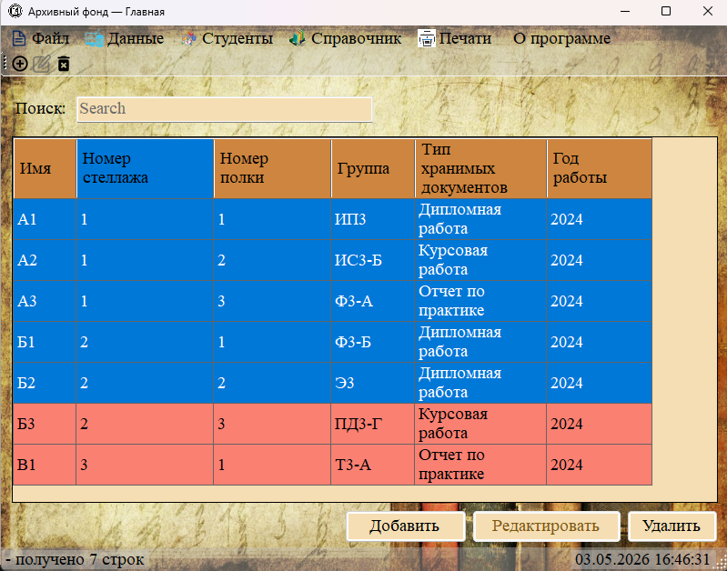
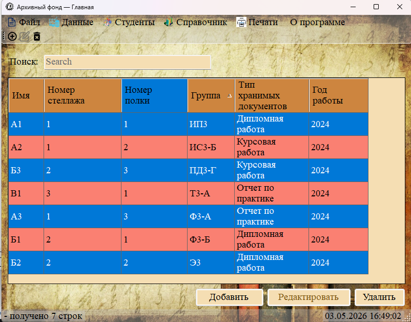

Таблица данных — основная рабочая область программы. В этом разделе описаны способы сортировки данных и выделения строк для выполнения операций.

Рис. 1. Таблица данных с выделенными строками
Сортировка данных

Рис. 2. Сортировка таблицы по выбранному столбцу
Для сортировки данных по столбцу:
1. Одинарный клик по заголовку столбца — сортировка по возрастанию (от А до Я, от меньшего к большему).
2. Повторный клик по тому же заголовку — сортировка по убыванию (от Я до А, от большего к меньшему).
3. Направление сортировки отображается маленькой стрелкой рядом с названием столбца (▲ — возрастание, ▼ — убывание).
Особенности сортировки в разных типах данных:
— Текстовые столбцы (ФИО, тема документа) — сортируются в алфавитном порядке.
— Числовые столбцы (номера стеллажей, полок) — сортируются по числовому значению.
— Столбцы с годами (год поступления, год создания) — сортируются хронологически.
Выделение строк

Рис. 3. Множественное выделение строк с помощью Ctrl и Shift
Для выполнения операций (редактирование, удаление) необходимо выделить строки в таблице:
Выделение одной строки:
— Левым кликом мыши по любому месту строки.
— Выделенная строка меняет цвет фона (обычно на более тёмный или контрастный).
Выделение нескольких строк:
— Ctrl + клик — добавляет строку к выделению или убирает её из выделения (поочерёдный выбор).
— Shift + клик — выделяет все строки между текущей выделенной и той, по которой кликнули (диапазон).
Клавиши для работы с выделением:
— Ctrl + A — выделить все строки в таблице.
— Delete — удалить выделенные строки (аналог кнопки «Удалить»).
— Стрелки вверх/вниз — перемещение выделения по строкам.
Что происходит при выделении строк
При выделении строк в таблице меняется состояние кнопок:
— Если выделена хотя бы одна строка — активируется кнопка «Удалить» (и соответствующие пункты меню).
— Если выделена ровно одна строка — дополнительно активируется кнопка «Редактировать».
— Если выделено несколько строк — кнопка «Редактировать» становится неактивной (нельзя редактировать несколько записей одновременно).
Автоматическое изменение размеров таблицы
После загрузки данных таблица автоматически подстраивает ширину столбцов под содержимое (функция AutoResizeColumns). При переключении между разделами ширина столбцов пересчитывается заново.
При необходимости пользователь может вручную изменить ширину любого столбца, перетаскивая границу между заголовками столбцов.